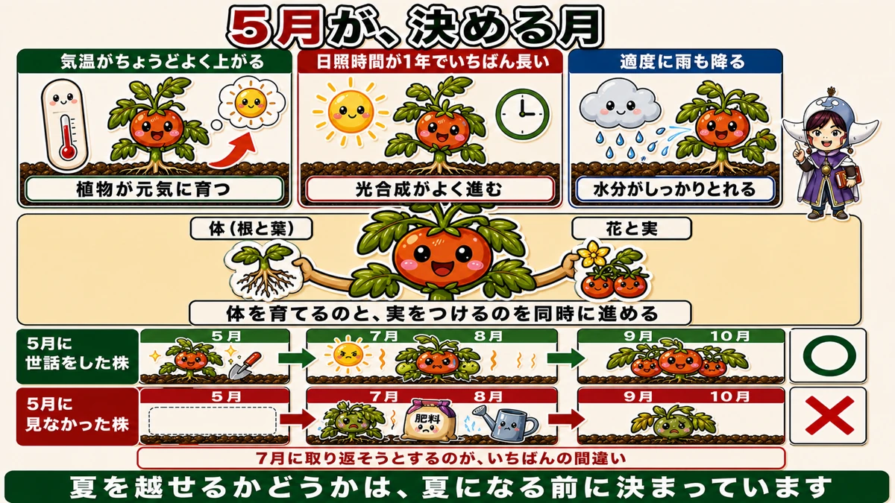
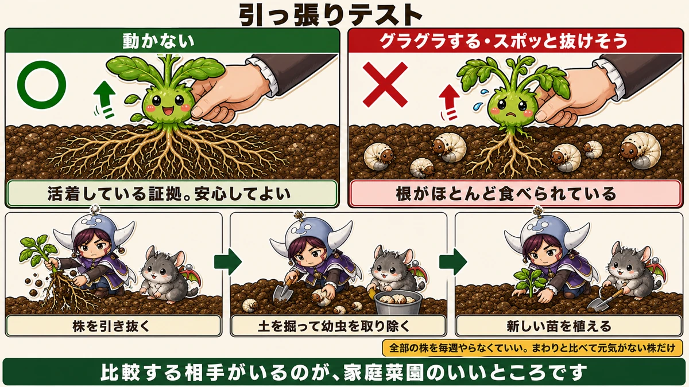
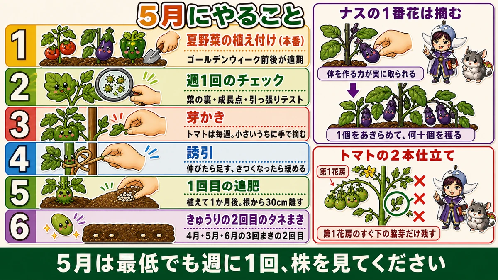

5月の畑でやること｜夏野菜の植えつけ・葉裏の点検・芽かきと誘引・追肥の時期
どうも、8150（えいこう）です🌱 家庭菜園歴8年、理科の教員免許を持っていて、有機・無農薬で野菜を育てています。
📖 この記事の目次
この記事で分かること
- 5月は、夏野菜を植えて、その株の「体づくり」をする月です。ここでの世話が、夏の収穫量を大きく左右します。
- 夏野菜の植えつけは、最低気温が8度を下回らなくなってから。関東なら4月の終わりから5月の連休ごろが目安です。
- 植えたあとは、週に1回、葉の裏と、いちばん上の新芽（成長点）を見て回ります。アブラムシは、ここから増えます。
- 1株だけ元気がないときは、そっと引っ張ってみます。ぐらぐらするなら、土の中で根が食べられているかもしれません。
- トマトは脇芽をかいて、ひもで支柱に結びます。ナスは、最初についた実を小さいうちに摘みとります。
- 追肥は、植えて1か月くらいが目安。トマトは肥料が効きすぎやすいので、ようすを見て控えめにします。
5月の畑は、植えたばかりの苗がぐんぐん育って、見ているだけでわくわくしますよね。連休に夏野菜を植えた方も多いと思います。
でも、「植えたら、あとは待つだけ」と思っていると、ちょっともったいないんです。5月は、苗が根を広げて、葉を増やして、これから実をつける体を作る大事な時期。ここで少し手をかけておくと、夏の収穫がぐっと楽になります。
安心してください。毎日つきっきりになる必要はありません。週に1回、見るべきところを見て回るだけで大丈夫です。この記事では、5月にやることを、植えつけから順番に書いていきます。

早見：5月の畑の基本（ひと目で分かる目安）
5月に植える・まくもの
- トマト、ミニトマト、ナス、ピーマン、ししとう、きゅうり、ズッキーニ、かぼちゃ、スイカなどの夏野菜の苗
- さつまいもの苗（つる）
- オクラ、枝豆、とうもろこし、いんげんの種まき
- きゅうりの2回目の種まき（夏の終わりまで長くとりたい場合）
5月の世話のチェックリスト
- 週に1回：葉の裏と、いちばん上の新芽を見る（アブラムシなど）
- 1株だけ元気がないとき：そっと引っ張ってみる（根の食害を疑う）
- トマト：脇芽をかく。ひもで支柱に結ぶ
- ナス：最初についた実を、小さいうちに摘む
- 植えて1か月くらい：追肥（トマトはようすを見て控えめに）
- 仮の支柱から本支柱へ：ひもの外し忘れに注意
- 水やり：根づいたら、やりすぎない
覚えておきたい数字
- 植えつけの目安：最低気温が8度を下回らなくなってから
- トマトの脇芽：4cmくらいでかくと、分かりやすく傷口も小さい、という説明があります
- ナスの最初の実：3cmくらい、または小指くらいの大きさで摘む
- 誘引のひも：30〜40cmくらいの長さを用意。草丈の下から3分の2くらいの位置で結ぶ
- 追肥：植えて1か月くらい。株から20cmくらい離して入れる例があります
5月の作業カレンダー（上旬・中旬・下旬）
- 上旬（連休のころ）：夏野菜の苗の植えつけ。仮の支柱を立てる。さつまいもの植えつけ準備
- 中旬：植えつけのまき残し・植え残しを終える。週1回の見回りを始める。トマトの脇芽かき。オクラや枝豆の種まき
- 下旬：ナスの最初の実を摘む。本支柱に立てかえる。早く植えた株の追肥。きゅうりの2回目の種まき
暖かい地域では少し早く、寒い地域では少し遅くなります。カレンダーより、最低気温と、株のようすを見て動いてください。
作業の手順
ここからは、5月の作業を、順番に書いていきます。
手順1：植えつけの日を決める
夏野菜の植えつけは、最低気温が8度を下回らなくなってからが目安です。
関東なら、4月の終わりから5月の連休ごろがちょうどいい時期と言われます。最低気温が8度を下回る日が何日も続いたり、霜が降りたりすると、植えたばかりの苗が弱って、ひどいときは枯れてしまうこともあります。植える前に、1週間くらい先までの天気予報を見て、冷えこむ日がないか確かめてください。
早く植えたい気持ちも分かりますが、寒い時期に無理に植えても、苗は育たずに足踏みするだけです。逆に、あまり遅くなりすぎると、ウリハムシなどの虫が増える時期と重なってしまう、という話もあります。遅くとも5月の中ごろまでには植え終えたいところです。
手順2：苗を選ぶ
植えつけの前に、苗をよく見て選びます。
- 背が低く、茎が太くて、がっしりしている
- 節と節のあいだ（節間）がつまっている
- 葉の色がよく、虫や病気のあとがない
節と節のあいだが長くて、ひょろっと細い苗は、光が足りなかったり、温度が高すぎたりしたまま育った苗です。植えたあとも、なかなかしっかりした株になりません。同じ値段なら、小さくても太くてがっしりした苗を選んでください。
植えつけのやり方
苗を植えるときの基本の流れです。
- 植える前に、ポットごと水につけるか、たっぷり水をやって、根鉢（ポットの中の土と根のかたまり）を湿らせておく
- 植え穴を掘り、穴にも水を入れて、しみこむのを待つ
- 根鉢をくずさないように、そっとポットから出して植える
- 深さは、根鉢の上の面が、まわりの土と同じ高さになるくらい（深植えしすぎない）
- まわりの土を寄せて、手で軽く押さえる
植えつけは、風のない、曇りの日か、晴れた日なら午後の遅い時間がおすすめです。強い日差しの中で植えると、苗がしおれやすくなります。
接ぎ木苗の場合は、つぎ目が土に埋まらないように気をつけてください。つぎ目が土に触れると、そこから根が出て、接ぎ木した意味がなくなってしまうことがあります。
マルチや敷きわら
植えつけの前に、黒いマルチを張っておくと、地温が上がって、根づきが早くなります。雑草も生えにくくなります。
マルチを使わない場合は、苗が根づいてから、株元にわらや刈った草を敷いておくと、土の乾燥や、雨の泥はねを防げます。泥はねは、病気の原因になることがあるので、特にトマトには敷いておくと安心です。
手順3：植えたら、すぐに仮の支柱を立てる
苗を植えたら、その日のうちに、短い仮の支柱を立てて、ひもで軽く結んでおきます。風で苗がゆさゆさ揺れると、伸び始めた根が切れてしまうからです。
仮の支柱は、90cmくらいのものを斜めに差して使う方法がよく紹介されています。
手順4：週に1回、葉の裏と成長点を見る
植えて落ちついたら、週に1回、株を見て回ります。
見るのは、この2か所です。
- 葉の裏
- いちばん上の、やわらかい新芽（成長点）
アブラムシなどの小さな虫は、葉の表ではなく、裏側や、やわらかい新芽に集まります。上から畑をながめているだけでは、まず気づきません。葉を1枚ずつめくって、裏をのぞいてみてください。
特にナスは、5月ごろから葉の裏にアブラムシがつき始めることが多いです。
手順5：虫を見つけたら、数で対応を変える
- 数匹だけなら：指でつぶすか、ピンセットでとる
- 葉の裏に広がっているなら：その葉ごと取り除くか、水で勢いよく洗い流す
- 株全体に広がっているなら：ひどい枝や葉は切りとり、まわりの株にも広がっていないか確かめる
大事なのは、少ないうちに見つけることです。アブラムシは、あっという間に増えます。週に1回の見回りは、早く見つけるためのものなんですね。
葉が内側に丸まっている株があったら、まず裏を見てください。虫がついていることがあります。ただし、トマトの場合は、肥料が多すぎても葉が丸まることがあるので、虫がいないのに丸まっているなら、肥料の効きすぎも疑ってみてください。
手順6：1株だけ元気がないときは、引っ張ってみる
同じ日に植えた苗の中で、1株だけ育ちが遅い、元気がない、ということがあります。
そんなときは、株元を持って、そっと揺らしたり、軽く上に引っ張ったりしてみてください。
- びくともしない：根はしっかり張っています。ほかの原因（寒さ、水、肥料など）を考えます
- ぐらぐらする、すっと抜けそうになる：土の中で、根が虫に食べられている可能性があります
これを「引っ張りテスト」と呼んでいます。
根を食べる虫には、コガネムシの幼虫や、ネキリムシ、きゅうりやスイカならウリハムシの幼虫などがいます。株元の土を少し掘ってみて、白っぽいいも虫が見つかったら、取り除いてください。
根がだいぶ食べられてしまった株は、回復がむずかしいこともあります。予備の苗があれば、植え直しを考えます。
ただ、ぐらぐらするのが必ず虫のせいとはかぎりません。植えたばかりで根がまだ広がっていないだけ、ということもあります。あくまで「疑うきっかけ」として使ってください。

手順7：葉の色がおかしいときは、寒さも疑う
5月の初めは、まだ朝晩冷えこむ日があります。
ナスの葉が、上のほうから黒っぽく、紫がかった色になっていたら、寒さに当たったサインのことが多いです。ナスは、低い温度にあたると、身を守るために紫色の成分を多く作るので、葉の色が濃くなるんですね。
暖かくなってくれば、新しく出てくる葉は元の色に戻ります。心配なら、寒い夜だけ不織布をかけてあげてください。
手順8：トマトの脇芽をかく
トマトは、葉のつけ根から「脇芽」が次々に出てきます。これをそのままにしておくと、枝がどんどん増えて、葉ばかり茂り、実のつきが悪くなります。
1本仕立て（主の茎1本だけを伸ばす育て方）にするなら、脇芽は全部かきとります。
脇芽の大きさの目安は、説明が分かれます。
- なるべく早く、小さいうちにとる
- 小さすぎると手でつまみにくく、まわりの葉や茎を傷めることがある。少し伸ばして、4cmくらいになってからとると、分かりやすく、傷口も小さくてすむ
慣れないうちは、指でつまめるくらいの大きさになってからとるのがおすすめです。
脇芽をかくのは、晴れた日の午前中がいちばんです。切り口が早く乾いて、病気が入りにくくなります。
手順9：2本仕立てにするなら
トマトを2本仕立てにする場合は、最初の花房（第1花房）のすぐ下から出る脇芽を1本だけ残して、大きく育てます。この脇芽は勢いがあるので、もう1本の主の茎として使えます。
ほかの脇芽は、1本仕立てと同じようにかきとります。
手順10：ひもで支柱に結ぶ（誘引）
株が伸びてきたら、ひもで支柱に結んでいきます。これを「誘引（ゆういん）」と言います。
- ひもは、30〜40cmくらいの長さの麻ひもやビニールひもを用意します
- 結ぶ位置は、草丈の下から3分の2くらいのところ
- 茎とのあいだに、ゆとりを持たせて結びます（茎はこれから太るので、きつく縛らない）
上のほうで結ぶと、茎がまだ細いので、風で折れることがあります。逆に、下すぎると、トマトはすぐに伸びるので、またすぐに結び直すことになります。
誘引は、伸びるたびに新しく足していきます。そして、前に結んだところがきつくなっていないかも見て、きつければゆるめます。
手順11：仮の支柱を外すときは、ひもに注意
株が大きくなってきたら、本支柱を立てて、仮の支柱を外します。
ここで、よくある失敗があります。仮の支柱に結んだひもを外し忘れたまま、仮の支柱を引き抜いてしまうことです。
夏野菜は1週間もしないうちにぐんぐん伸びるので、仮の支柱に結んだひもは、いつのまにか葉に隠れて見えなくなっています。そのまま仮の支柱を抜くと、ひもに引っ張られて、株ごと抜けてしまうことがあるんです。
仮の支柱を抜く前に、必ずひもを探して、外してから抜いてください。
手順12：ナスの最初の実を摘む
ナスは、最初の花（1番花）が咲いて、実がついたら、その実を小さいうちに摘みとります。
目安は、実の大きさが3cmくらい、または小指くらいになったころ。もったいないと思うかもしれませんが、株がまだ小さいうちに実を育てると、株の体力がそちらにとられて、そのあとの生育が鈍ってしまいます。最初の実をあきらめることで、株が体づくりに専念でき、そのあと長く実をつけてくれるようになります。
ここで1つ注意があります。花の段階で摘むのではなく、実になってから摘むのがおすすめです。花のうちに摘んでしまうと、あとでどれが1番花だったか分からなくなって、2番目の花をまた摘んでしまう、ということが起きやすいからです。
ピーマンやししとうも、最初の実を小さいうちに摘んでおくと、株の育ちがよくなると言われます。

手順13：植えて1か月くらいで追肥する
植えつけのときに入れた元肥は、1か月くらいたつと効き目が薄れてきます。そのころが、追肥のタイミングです。
ナスやピーマンは、肥料をよく使う野菜なので、追肥は欠かせません。1週間くらいなら、早めても問題ないと言われます。
追肥の入れ方の例です。
- 株から20cmくらい離れたところに、マルチの切れ目を入れる
- そこに肥料を入れて、土をかぶせる
- 反対側にも同じように入れる
株元のすぐ近くに入れると、若い根は肥料を吸いにくく、むしろ傷めることもあります。根の先が伸びている、少し離れたところに入れるのがコツです。
有機の肥料は、効き始めるまでに時間がかかります。追肥してから2〜3週間たって、実が大きくなってくるころに効いてくる、という説明もあります。
手順14：トマトの追肥は、ようすを見て
トマトだけは、ちょっと別扱いです。
トマトは、ほかの夏野菜に比べて、肥料を吸う力がとても強い野菜です。肥料が多すぎると、葉や茎ばかりが勢いよく育って、花が落ちたり、病気が出やすくなったりします。
トマトの株を見て、次のような状態なら、肥料が効きすぎているサインです。
- 茎が異常に太い。茎がたてに裂けてくる
- 乾いていないのに、葉が内側に丸まる
- 葉の色が濃すぎる
こういうときは、追肥はしません。逆に、葉の色が薄く、育ちが悪いときだけ、少なめに追肥します。
手順15：水やりは、根づいたら控えめに
植えたばかりの苗には、根づくまで水をやります。でも、根づいたあとの5月は、水やりはなるべく控えるのが基本です。
この時期の根は、まだ若くて細いものが多く、水をやりすぎると、根が傷んで「根ぐされ」を起こすことがあります。また、水を控えると、根は水を探して深く広く伸びていきます。この時期に根を深く張らせておくと、夏の暑さや乾燥に強い株になります。
ただし、これは畑に植えた夏野菜の、5月の話です。プランターは乾きやすいので、土の乾き具合を見て水をやってください。また、きゅうりのように水を多く使う野菜や、夏に大きく育った株は、話が変わってきます。
5月に植える・まくもののポイント
トマト・ミニトマト
- 植えつけは、最低気温が8度を下回らなくなってから
- 元肥は控えめに。肥料が多いと、葉ばかり茂って花が落ちやすい
- 脇芽かきと誘引を、週に1回のペースで
ナス・ピーマン・ししとう
- 寒さに弱いので、トマトより少し暖かくなってからでも大丈夫
- 最初の実は小さいうちに摘む
- 植えて1か月くらいで追肥。肥料をよく使う
きゅうり
- 植えつけたら、すぐにネットや支柱に誘引する
- ウリハムシが来やすいので、早めに植えるか、防虫ネットで守る
- 夏の終わりまで長くとりたいなら、時期をずらして種をまく
きゅうりは、1本の株が長くもたないことがあるので、時期をずらして何回かに分けてまく方法があります。たとえば、2月下旬・4月・6月・8月と、4回に分けてまく方もいます。5月にもう一度まいておけば、最初の株が疲れてきたころに、次の株がとれ始めます。
ズッキーニ・かぼちゃ
- つるが広がるので、まわりに広い場所をとっておく
- 花が咲き始めたら、朝のうちに人工授粉をすると、実がつきやすくなる
- 人工授粉は、雄花の花粉を、雌花のまん中にちょんちょんとつける作業。雌花は、花の下に小さな実のふくらみがあるほうです
5月はまだ虫が少なく、自然に受粉しにくいことがあります。最初の何個かは、手で授粉してあげると確実です。
きゅうりの誘引
きゅうりは、つるを伸ばして、巻きひげでネットや支柱につかまりながら上へ登っていきます。でも、植えたばかりのうちは、まだ自分でうまくつかまれません。
- 植えたら、すぐにネットや支柱にひもで軽く結んでおく
- つるが伸びてきたら、ネットのほうへ導いてあげる
- 風の強い日のあとは、ずれていないか見る
これから先、台風などの強い風が来る季節にもなるので、早めにしっかり誘引しておくと安心です。
さつまいも
- 5月から6月が植えつけの時期
- 苗（つる）を斜めや水平に寝かせるように植える
- 肥料は控えめに。肥料が多いと、つるばかり伸びていもが太らない
オクラ・枝豆・とうもろこし
- 地温が上がってから種をまく
- 枝豆は、芽が出るときに鳥に食べられやすいので、不織布やネットで守る
- とうもろこしは、1列ではなく、2列以上にまとめて植えると、受粉しやすくなる
植えるときの株の間かくの目安
株と株のあいだが狭すぎると、育ったときに葉が混みあって、風通しが悪くなり、病気や虫が出やすくなります。苗が小さいうちはすき間が広く見えますが、夏には驚くほど大きくなるので、思いきって間をあけて植えてください。
- トマト・ナス・ピーマン：50cmくらい
- きゅうり：40〜50cmくらい
- ズッキーニ・かぼちゃ：1m近く（つるが広がるので広めに）
畑の広さに合わせて、植える数をしぼることも大切です。少ない株をしっかり育てるほうが、結果的にたくさんとれることもよくあります。
失敗の見分け方
植えたのに、ぜんぜん大きくならない
- 寒さ：最低気温が低い日が続いていないか。不織布で保温します
- 根の食害：引っ張りテストをしてみる
- 水のやりすぎ：根ぐされしていないか。土がいつもじめじめしているなら、水を控えます
- 苗の質：ひょろっとした苗は、追いつくまで時間がかかります
植えた翌日、苗がしおれた
植えつけたあと、苗が一時的にしおれるのは、よくあることです。根が新しい土になじむまで、水を吸う力が弱くなっているためです。
- 植えた日に、たっぷり水をやったか確かめる
- 強い日差しが続くなら、数日だけ日よけをする
- 夕方に元に戻っていれば、心配いりません
何日たっても戻らない場合は、根鉢をくずしすぎたか、根が傷んでいる可能性があります。
葉が丸まる
- 葉の裏を見て、虫がいないか確かめる
- 虫がいないなら、トマトは肥料の効きすぎを疑う
- 乾燥で丸まっていることもあるので、土の湿り気も見る
ナスの葉が黒っぽい
寒さに当たったサインのことが多いです。暖かくなれば、新しい葉は元に戻ります。
トマトの花が落ちる
肥料の効きすぎ、特に窒素の多すぎが疑われます。追肥を止めて、ようすを見ます。寒さや、日照不足で落ちることもあります。
株が抜けてしまった
仮の支柱を抜くときに、ひもを外し忘れていなかったか見てください。根が無事なら、すぐに植え直して、たっぷり水をやります。
説明が分かれていること
トマトの脇芽は、小さいうちか、少し伸ばしてからか
- なるべく早く、小さいうちにとる、という説明
- 小さすぎると、とるときに葉や茎を傷める。4cmくらいまで伸ばしてからとると、分かりやすく傷口も小さい、という説明
同じ人でも、動画によって説明が違うことがあります。どちらでもいいので、自分がとりやすい大きさでとってください。大きく伸びすぎる前にとる、というのは共通しています。
植えつけ時の肥料：入れるか、入れないか、減らすか
- 元肥を入れて植え、1か月後に追肥する、という説明
- トマトは肥料を吸う力が強いので、元肥を少なめにする、という説明
- 植えつけのときは肥料を入れない。窒素が多いと茎ばかり太って、花が落ちたり病気が出やすくなる、という説明
- 長く効く肥料（一度入れれば効き続けるタイプ）を元肥に使い、追肥はしない、という説明
どれが正しいというより、畑の土の状態や、使う肥料、育て方によって変わります。前の年によく肥料を入れた畑なら、少なめから始めると安心です。
追肥の量
- 株から20cmくらい離して、肥料を少量ずつ入れる例
- トマトは、肥料が足りないようすのときだけ、少なめに入れる例
夏野菜と秋冬野菜でも追肥の量の目安は違います。株元から離して入れる、というのは、どの説明でも共通しています。
植えつけは、連休中か、連休明けか
- 関東なら、4月の後半から連休ごろが適期。遅くとも5月の中ごろまでに、という説明
- 連休中から連休明けが、一般的な植えつけの時期、という説明
- ウリハムシのことを考えると、遅く植えるより早めに植えたほうがいい、という説明
地域やその年の気温によって変わります。最低気温8度を目安にして、決めてください。
トマトの水やり：控えるか、やるか
- 水を控えると、トマトの味が濃くなる、という説明
- ただ、畑では雨や、まわりから水が入ってくるので、水を控えるのは思ったほど簡単ではない、という説明
5月の時点では、根づいたら水やりを控えめにする、と覚えておけば十分です。
よくある質問
Q. 連休に植えそびれました。今からでも間に合いますか？
A. 間に合います。5月中に植えれば、夏の収穫は十分に楽しめます。暖かくなっているぶん、植えたあとの育ちも早いです。ただ、遅くなるほど、虫が増える時期と重なりやすいので、防虫ネットなどの備えをしておくと安心です。
Q. 苗を買ったけど、すぐに植えられません
A. 数日なら、ポットのまま、日当たりのよい場所に置いて、水を切らさないようにしておけば大丈夫です。ただ、ポットの中は根がつまりやすいので、なるべく早く植えてください。
Q. 週に1回の見回りの時間がとれません
A. 全部の株を見なくても大丈夫です。気になる株、特にナスの葉の裏と、トマトの脇芽だけでも見ておくと、大きな差がつきます。5分でもいいので、続けることが大切です。
Q. 引っ張りテストで、株を傷めませんか？
A. 強く引っ張りすぎなければ大丈夫です。根がしっかり張っていれば、軽く引っ張ったくらいではびくともしません。毎週全部の株でやる必要はなく、元気がない株だけで十分です。
Q. ナスの最初の実、どうしても摘むのがもったいないです
A. 気持ちはよく分かります。でも、そのあと何十個もとれるナスのための、最初の投資だと思ってください。株が大きくしっかりしていれば、そのまま育ててもいいという考え方もありますが、迷ったら摘んでおくのがおすすめです。
Q. 脇芽をとりすぎて、葉が少なくなってしまいました
A. 脇芽をかいたあとも、主の茎から新しい葉は出てきます。葉そのものを取ってしまったのでなければ、心配いりません。主の茎の先（成長点）を間違えて折ってしまった場合は、いちばん上の勢いのある脇芽を1本残して、それを新しい主の茎として育てます。
Q. とった脇芽は、植えられますか？
A. トマトの脇芽は、水にさしておくと根が出ることがあります。根が出たら、ポットや畑に植えて、もう1株として育てられます。夏から秋にかけての収穫を狙う方法として紹介されることもあります。
Q. 雨の日が続いて、水やりのタイミングが分かりません
A. 雨が続いているなら、水やりはいりません。土がずっと湿っているときに水をやると、根ぐされの原因になります。晴れが続いて、土の表面が白く乾いて、葉が日中しおれるようなら、たっぷり水をやってください。
Q. プランターでも、5月の世話は同じですか？
A. 基本は同じです。ただ、プランターは土の量が少ないので、畑より乾きやすく、肥料も切れやすいです。水やりは、土の表面が乾いたらたっぷり。追肥も、畑より少し早めに、少量ずつ入れるとちょうどいいです。プランターは、引っ張りテストより、鉢底から根が出ていないか、水がしみこまなくなっていないかを見るほうが役に立ちます。
Q. 本支柱は、いつ立てればいいですか？
A. 仮の支柱の高さを超えて伸びてきたら、そろそろ本支柱のタイミングです。トマトなら、植えてから2〜3週間くらいが目安になります。株が小さいうちに立てておくと、根を傷めにくいです。
Q. 防虫ネットは、5月からかけたほうがいいですか？
A. きゅうりやかぼちゃなどのウリのなかまは、ウリハムシが来やすいので、植えてしばらくのあいだネットや不織布で覆っておくと安心です。株が大きくなって花が咲き始めたら、受粉のために外します。ナスやトマトは、ネットより、週1回の見回りで早めに見つけるほうが手軽です。
学ぶ🔬 なぜ5月の世話が、夏の収穫を決めるのか
ここからは、5月の世話のしくみについて、少しだけ深く書いておきます。読み飛ばしても大丈夫です。
5月は、野菜にとって条件のいい月
5月は、気温がちょうどよく上がり、昼の時間が長くなり、ほどよく雨も降ります。夏野菜にとって、ぐんぐん育つのにとても都合のいい季節です。
同時に、5月は、苗が根を広げ、葉を増やし、これから実をつけるための体を作る時期でもあります。いわば、夏の収穫のための土台づくりの期間です。
初めの遅れは、あとから取り返しにくい
5月に根や葉を十分に育てられなかった株は、夏になってから肥料をたくさんやっても、なかなか取り戻せません。根が小さいと、肥料をやっても吸いきれないからです。
収穫が少ないからといって、夏に肥料を一気にやると、かえって株が弱ったり、病気が出たりすることもあります。だからこそ、最初の1か月の世話が大切なんです。
なぜ最低気温8度が目安なのか
トマトやナス、ピーマンなどの夏野菜は、暖かい地域が生まれの野菜です。寒さに弱く、気温が低いと根の動きがにぶくなって、水や養分をうまく吸えなくなります。
昼間がいくら暖かくても、夜の冷えこみで根が止まってしまうと、苗は育たずに足踏みしてしまいます。最低気温、つまり夜の気温を目安にするのは、このためです。
8度という数字は、夏野菜の苗が寒さで大きく傷まずにすむ、ひとつの目安として言われているものです。地域や品種によって多少前後するので、天気予報で冷えこみが続かないかを見て、余裕を持って決めてください。
なぜ最初の実を摘むと、あとでたくさんとれるのか
植物は、葉で作った栄養を、根・茎・葉を育てることと、実を育てることに分けて使っています。
株がまだ小さいうちに実をつけると、栄養の多くが実に回ってしまい、根や葉を育てるぶんが足りなくなります。すると、株が小さいまま夏を迎えることになり、結局たくさんの実を支えられません。
最初の実を摘むのは、栄養を株の体づくりに回して、大きな工場を作ってから実を育ててもらうためです。
なぜ水を控えると、根が深く伸びるのか
根は、水のあるほうへ伸びていきます。表面にいつも水があると、根は浅いところに広がって、深くまで伸びる必要がなくなります。
水を控えめにすると、根は水を探して、土の深いところまで伸びていきます。深く根を張った株は、真夏に表面の土が乾いても、深いところの水を吸えるので、暑さや乾燥に強くなります。
5月に水を控えるのは、夏に強い株を育てるための準備でもあるんですね。
なぜトマトは肥料を控えめにするのか
トマトのふるさとは、南米のアンデスの高地と言われます。もともと、やせた土地で育ってきた植物なので、少ない養分でもしっかり吸いとる力を持っています。
そんなトマトに、ほかの夏野菜と同じように肥料をたっぷりやると、吸いすぎてしまいます。葉や茎ばかりが勢いよく育って、花や実をつけるほうに力が回らなくなる。これが、トマトの肥料を控えめにする理由です。
なぜトマトの脇芽をかくのか
トマトは、放っておくと、葉のつけ根から次々に脇芽を出して、どんどん枝分かれしていきます。枝が増えると、葉も花も増えるので、一見たくさんとれそうに思えます。
でも、1株が作れる栄養には限りがあります。枝が増えすぎると、栄養があちこちに分散して、1つひとつの実が小さくなったり、葉が混みあって風通しが悪くなり、病気が出やすくなったりします。
脇芽をかいて、育てる茎をしぼるのは、栄養を実に集中させて、風通しのよい株にするためなんです。
なぜ誘引にゆとりを持たせるのか
トマトやナスの茎は、育つにつれて、どんどん太くなっていきます。最初にきつく縛ってしまうと、茎が太ったときにひもが食いこんで、水や栄養の通り道をしめつけてしまいます。
ひもを8の字にかけて、茎と支柱のあいだに指1本ぶんくらいのゆとりを持たせるのは、このためです。見回りのときに、前に結んだひもが食いこんでいないかも見てあげてください。
なぜ寒いと、ナスの葉が紫っぽくなるのか
ナスの実や茎が紫色なのは、アントシアニンという色素のためです。この色素は、寒さや強い光から植物を守るはたらきがあると考えられています。
寒さにあたると、ナスはこの色素をふだんより多く作ります。それで葉の色が濃く、黒っぽく見えるようになるんですね。病気ではないので、暖かくなれば落ちつきます。
まとめ
ここまで読んでくださって、ありがとうございます！
5月の畑のポイントを、もう一度まとめておきます。
- 夏野菜の植えつけは、最低気温が8度を下回らなくなってから
- 苗は、背が低く、茎が太く、がっしりしたものを選ぶ
- 週に1回、葉の裏と成長点を見る。虫は少ないうちに
- 1株だけ元気がないときは、引っ張りテスト
- トマトは脇芽をかいて、ゆとりを持たせて誘引する
- 仮の支柱を抜くときは、ひもを外してから
- ナスの最初の実は、小さいうちに摘む（花ではなく実で）
- 追肥は植えて1か月くらい。トマトはようすを見て控えめに
- 根づいたら、水やりは控えめに
- 株の間は思いきってあける。夏には驚くほど大きくなる
- ズッキーニやかぼちゃは、最初の何個かを手で授粉すると確実
5月の世話は、どれも一つひとつは小さな作業です。特別な道具も、むずかしい技もいりません。必要なのは、ほんの少しの時間と、株をよく見る目だけです。でも、この積み重ねが、夏のたくさんの収穫につながります。
週に1回、5分だけでも、畑を見て回る習慣をつけてみてください。葉の裏をめくる、脇芽を1本かく、ひもを1か所ゆるめる。それだけでも、株はちゃんと応えてくれます。見回りを続けていると、株の小さな変化にも気づけるようになって、畑に行くのがどんどん楽しみになっていきます。きっと、夏の畑がもっと楽しくなりますよ🍅
スイートコーンのタネ
5月まきの代表です。2列以上にまとめてまかないと受粉しません。
![[商品価格に関しましては、リンクが作成された時点と現時点で情報が変更されている場合がございます。]](https://hbb.afl.rakuten.co.jp/hgb/56eb99ba.ba083ff3.56eb99bb.e7e05161/?me_id=1436583&item_id=10000119&pc=https%3A%2F%2Fthumbnail.image.rakuten.co.jp%2F%400_mall%2Fyamatonoen%2Fcabinet%2F12534367%2F12597951%2F12597952%2Fimgrc0136347570.jpg%3F_ex%3D240x240&s=240x240&t=picttext "[商品価格に関しましては、リンクが作成された時点と現時点で情報が変更されている場合がございます。]")

枝豆のタネ
5月にまいて、6月中に穫り切ります。遅れると味が落ちます。
![[商品価格に関しましては、リンクが作成された時点と現時点で情報が変更されている場合がございます。]](https://hbb.afl.rakuten.co.jp/hgb/552615f0.9cc2855e.552615f1.776f7de9/?me_id=1251188&item_id=10000185&pc=https%3A%2F%2Fthumbnail.image.rakuten.co.jp%2F%400_mall%2Fyonezawa%2Fcabinet%2Ftane01%2F1011mame%2Fbeerfriendgf.jpg%3F_ex%3D240x240&s=240x240&t=picttext "[商品価格に関しましては、リンクが作成された時点と現時点で情報が変更されている場合がございます。]")
支柱150cm
芽かきと誘引を同時にやる月です。仮支柱は早めに。
![[商品価格に関しましては、リンクが作成された時点と現時点で情報が変更されている場合がございます。]](https://hbb.afl.rakuten.co.jp/hgb/56d221a0.da732c49.56d221a1.b57a6709/?me_id=1230952&item_id=10017113&pc=https%3A%2F%2Fthumbnail.image.rakuten.co.jp%2F%400_mall%2Fnou-nou%2Fcabinet%2F5010356000109-01.jpg%3F_ex%3D240x240&s=240x240&t=picttext "[商品価格に関しましては、リンクが作成された時点と現時点で情報が変更されている場合がございます。]")
液肥
ナスの1番花を摘んだあと、株を作りにいくときに。
![[商品価格に関しましては、リンクが作成された時点と現時点で情報が変更されている場合がございます。]](https://hbb.afl.rakuten.co.jp/hgb/56bc2da1.2bf36c6e.56bc2da2.7b66fad7/?me_id=1347284&item_id=10000008&pc=https%3A%2F%2Fthumbnail.image.rakuten.co.jp%2F%400_mall%2Fmandahakko%2Fcabinet%2Fsyokubutsumanda%2F260306_smn_amn5004.jpg%3F_ex%3D240x240&s=240x240&t=picttext "[商品価格に関しましては、リンクが作成された時点と現時点で情報が変更されている場合がございます。]")